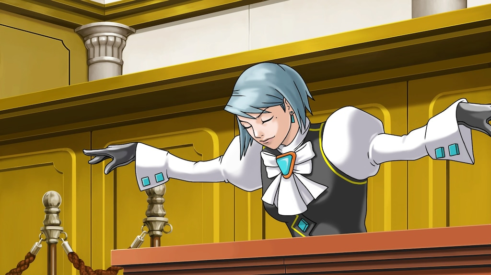

The story about a devil hunter who is also part devil himself, a lot of swords and guns involved.
The most recent entry into the Street Fighter games, I main Ken and Terry, along with some others.
This is apart of the Ace Attorney Trilogy, released in 2019. It has one my favorite characters, Franziska Von Karma